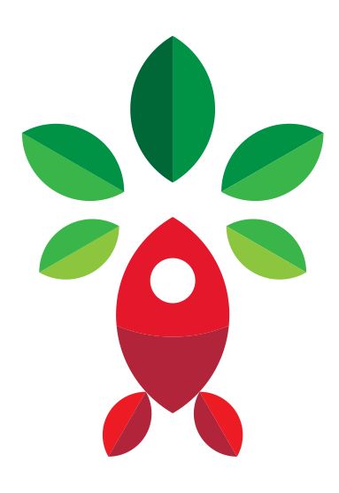

Lernpfade
Relevante ESG-Themen werden verständlich aufgebaut und in sinnvolle Schritte gegliedert.
Rocketree ist eine Lern- und Austauschplattform für Organisationen, die ESG nicht nur nachlesen, sondern im Arbeitsalltag sicherer einordnen, erklären und anwenden wollen.

Der Einstieg beginnt mit 90 Tagen Rocketree: 3–5 Personen arbeiten an einer aktuellen ESG-Herausforderung aus eurem Unternehmen.
Rocketree verbindet strukturierte Lernpfade, Austausch, Gruppen-Q&A und konkrete Anwendung. Organisationen nutzen Rocketree, um ESG-Anforderungen besser einzuordnen, eine gemeinsame Sprache zu entwickeln und Entscheidungen im Alltag sicherer zu treffen.
Relevante ESG-Themen werden verständlich aufgebaut und in sinnvolle Schritte gegliedert.
ESG wird nicht nur erklärt, sondern an echten Situationen aus dem Unternehmen bearbeitet.
Die Community hilft, Fragen einzuordnen und Erfahrungen aus ähnlichen Situationen nutzbar zu machen.
Regelmäßige Gruppenformate geben Raum für offene Fragen, Einordnung und nächste Schritte.
Viele Organisationen haben Zugang zu ESG-Wissen. Schwierig wird es, wenn eine konkrete Frage im Unternehmen landet: Wer ordnet sie ein? Welche Anforderungen sind relevant? Was lässt sich intern vertreten? Und wer trägt die Entscheidung mit?
Ein Kunde, Auditor oder Partner stellt eine ESG-Frage. Intern ist nicht sofort klar, wer antwortet und auf welcher Grundlage.
Eine Person sammelt Informationen, aber das Unternehmen wird dadurch nicht automatisch sicherer.
Management, HR, Einkauf und Operations sprechen über ESG, aber nicht immer mit derselben Bedeutung.
Neue Anforderungen lösen Abstimmungen und Unsicherheit aus. Beim nächsten Thema beginnt vieles wieder von vorn.
Genau hier setzt Rocketree an: Aus dem Wissen einer einzelnen Person wird eine gemeinsame Grundlage, die das Unternehmen mitträgt.
Aus Einzelwissen wird gemeinsame SpracheIhr startet mit einer aktuellen ESG-Herausforderung aus eurem Unternehmen. Mit Rocketree ordnet ihr diese Herausforderung ein, arbeitet gemeinsam daran und schafft eine erste Grundlage für die weitere ESG-Arbeit.
Das kann sein:
Eine ESG-Herausforderung wird in ihre Bestandteile zerlegt – sichtbar, teilbar, bearbeitbar.

In den 90 Tagen arbeiten 3–5 Menschen aus eurer Organisation an derselben Frage. Unterschiedliche Rollen, eine gemeinsame Sprache.
3–5 Personen · ein gemeinsamer AnlassDrei Phasen, ein konkreter Anlass. Der Einstieg ist nicht vage – ihr wisst von Anfang an, woran ihr arbeitet.
Ihr klärt, worum es bei eurer ESG-Herausforderung wirklich geht: relevante Begriffe, Anforderungen, Rollen, Risiken und offene Fragen.
Ihr arbeitet an eurem konkreten Anlass. Dabei nutzt ihr passende Lernpfade, Austausch und Q&A, statt die Frage allein zu bearbeiten.
Ihr haltet fest, was daraus für euer Unternehmen folgt: gemeinsame Sprache, nächste Schritte, interne Argumente und eine bessere Grundlage für ähnliche Situationen.
Ihr klärt, worum es bei eurer ESG-Herausforderung wirklich geht: relevante Begriffe, Anforderungen, Rollen, Risiken und offene Fragen.
Ihr arbeitet an eurem konkreten Anlass. Dabei nutzt ihr passende Lernpfade, Austausch und Q&A, statt die Frage allein zu bearbeiten.
Ihr haltet fest, was daraus für euer Unternehmen folgt: gemeinsame Sprache, nächste Schritte, interne Argumente und eine bessere Grundlage für ähnliche Situationen.
Relevante Begriffe, Anforderungen, Rollen, Risiken und offene Fragen werden geklärt.
Ihr arbeitet am konkreten Anlass – mit Lernpfaden, Austausch und Q&A statt allein.
Gemeinsame Sprache, nächste Schritte und interne Argumente werden festgehalten.

Ob Geschäftsführung, Einkauf oder Projektleitung: Rocketree macht ESG für die Menschen anschlussfähig, die Entscheidungen treffen und vertreten müssen.
ESG, das mehrere mittragenRocketree ist sinnvoll, wenn ESG im Unternehmen bereits Druck erzeugt, aber noch keine gemeinsame Anwendung entstanden ist. Es geht nicht darum, alle Fragen sofort abschließend zu beantworten – sondern eine aktuelle Herausforderung so zu bearbeiten, dass mehrere Menschen sie verstehen, einordnen und intern besser weitertragen können.
Rocketree hilft bei Orientierung und Anwendung. Rechtliche Prüfung bleibt Aufgabe spezialisierter Beratung.
Rocketree ersetzt keine ESG-Software. Es schafft die Grundlage, damit Anforderungen besser verstanden und eingeordnet werden.
Kein allgemeiner Onlinekurs: Ihr arbeitet mit Rocketree an einem realen Anlass aus eurem Unternehmen.
Verantwortung bleibt im Unternehmen. Rocketree hilft, sie besser zu teilen.
Der 90-Tage-Einstieg schafft eine erste gemeinsame Grundlage. Danach kann Rocketree weiter genutzt werden: von einzelnen Personen, von Teams oder später breiter in der Organisation. So wird aus dem ersten Anlass keine einmalige Maßnahme, sondern der Beginn einer Arbeitsweise, mit der ESG im Unternehmen verständlicher, teilbarer und langfristig besser bearbeitbar wird.
3–5 Personen an einem konkreten Anlass. Der bewusst kleine erste Schritt.
Menschen, die ESG erklären und weitertragen müssen, nutzen Rocketree dauerhaft über das Solo-Abo.
29 € / Monat · 249 € / JahrMehrere Rollen oder Abteilungen arbeiten mit gemeinsamen Lernpfaden, Austausch und Q&A.
ESG wird nicht nur bei Einzelnen gehalten, sondern breiter im Unternehmen nutzbar gemacht.
Später können auch Anforderungen einbezogen werden, die über das eigene Unternehmen hinausgehen.
Rocketree ist für uns mehr als ein Produkt – Nachhaltigkeit ist Kultur, nicht Häkchen. Wenn ihr über euren Einstieg sprechen wollt, meldet euch direkt bei uns. Persönlich, ohne Umweg.
Boonrat verantwortet das Was und Warum von Rocketree. Sie verbindet Produktdesign, KI und echten Nutzen – und sorgt dafür, dass wir das Richtige bauen: auf die richtige Weise, für die richtigen Menschen.
Sunshine macht aus großen Ideen funktionierende Abläufe. Sie führt alles, was Rocketree am Laufen hält – von Team und Partnern bis zu Piloten – und verbindet Vision, Umsetzung und Wachstum.
Arbeitet mit 3–5 Personen an eurer aktuellen ESG-Herausforderung.
Je früher ihr einsteigt, desto weniger kostet Unklarheit – und desto mehr schafft ihr internen Wert.
Wir klären gemeinsam, ob eure aktuelle ESG-Herausforderung für den Einstieg geeignet ist.